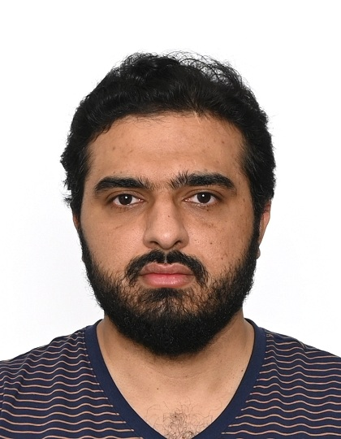

Mechanistic Interpretability
Tracing predictive information through layers, representations, and decision pathways without changing the deployed model.
Explore the themeI develop machine-learning methods in mechanistic interpretability, human-centered explainable AI, reliable time-series learning, and generative-AI evaluation.

My work connects model innovation with rigorous evaluation and evidence about how neural networks reach their decisions.
Tracing predictive information through layers, representations, and decision pathways without changing the deployed model.
Explore the themePhysics-guided, heterogeneous, and structure-aware learning for energy forecasting and real-world time series.
Explore the themeEvaluating explanations and generated media against human perception, cognition, and practical decision needs.
Explore the themeMachine Learning with Applications
Introduces a non-interventional framework for tracing predictive information through neural networks and translating internal representations into human-centered evidence.
View publicationJournal of Creative Music Systems
Presents open-source Python research software for transforming MIDI event streams into reproducible measures and visual analytics for music-therapy research.
View publicationEnergy and AI
Combines learned temporal memory with physical guidance to improve the reliability of building-energy modeling.
View publicationEnergy Reports
Develops a recurrent architecture based on Kolmogorov-Arnold representations for forecasting heterogeneous consumer loads.
View publicationIEEE Transactions on Human-Machine Systems
Introduces a perceptual score that combines global and local evidence to evaluate the photorealistic quality of AI-generated images.
View publicationIEEE Transactions on Power Delivery
Uses hypernetworks and learnable kernels to adapt energy forecasts across diverse consumer profiles.
View publicationI earned my PhD in Electrical and Computer Engineering at Western University, specializing in applied AI and explainable AI. My dissertation investigated neural networks and their interpretability for building-energy modeling.
My publication record spans IEEE, Elsevier, Springer Nature, Frontiers, and CVPR, with applications across energy, finance, computer vision, generative media, and interdisciplinary research software.
I welcome conversations about research collaborations, open-source tools, and applied scientist opportunities.